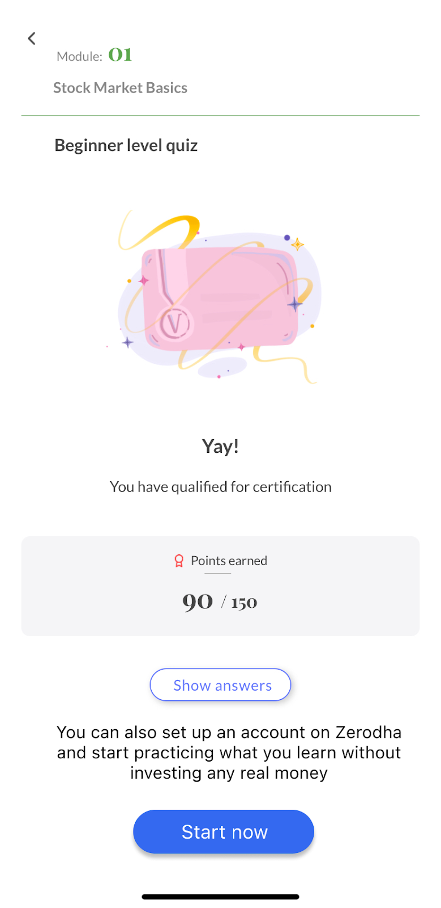
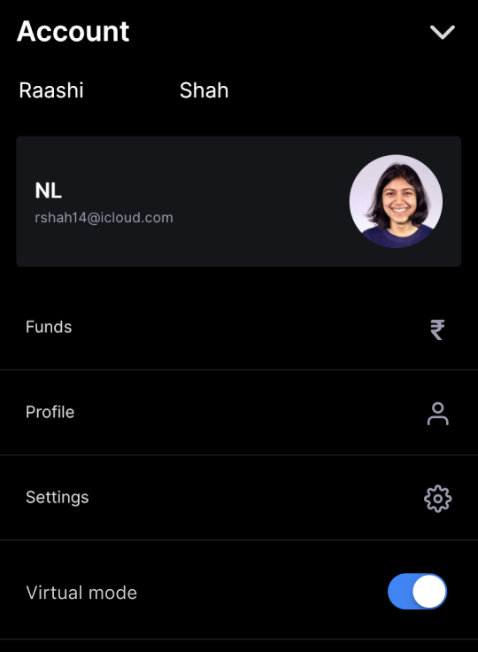
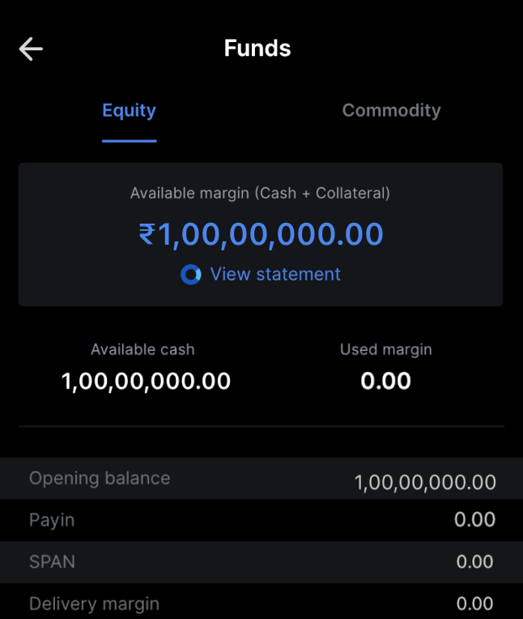
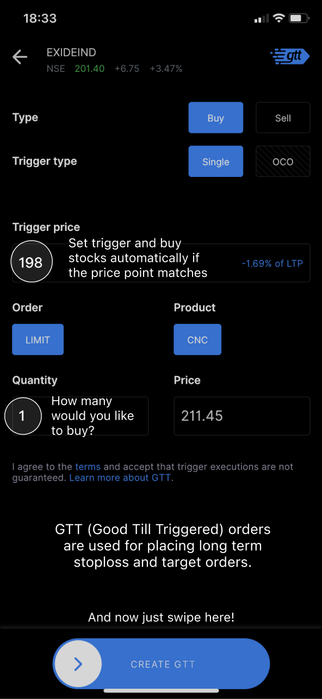
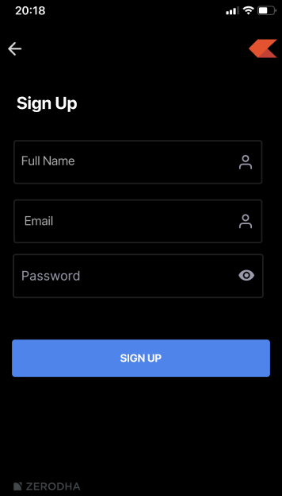
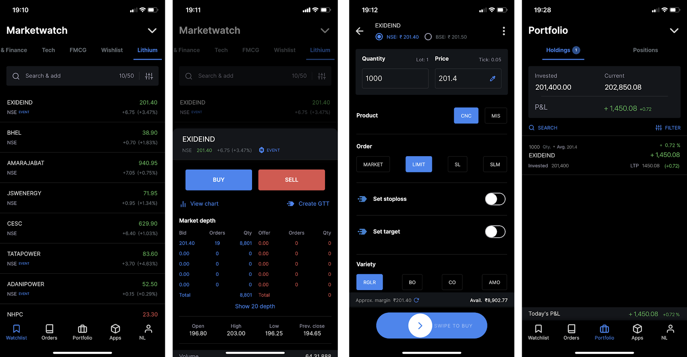

Zerodha currently caters to a large number of traders - being one of the most popular choices to trade options and commodities given it’s cheap brokerage prices. To expand the user base further, Zerodha could tap into a market where trading is not a norm yet.
Trading can be very intimidating as there is money involved. Users like to take informed decisions regarding their savings and are very careful, usually not high risk takers.
Virtual Trading is a simulated trading process in which would-be investors can 'practice' investing without committing real money. This is done by the manipulation of imaginary money and investment positions that behave in a manner similar to the real markets. When learning how to trade, users like to create spreadsheets to stimulate markets and assume their buys and sells. Although sometimes these methods can have huge drop-out rates due to their inaccessibility. Another turn that can be taken is users trading with real money with not enough experience in the market, ending up losing some of their wealth in the process.
Introducing Virtual Trading as a switch could invite users to give a hand at trading with less risk, and with Zerodha’s user interface and experience, the process can be much more inviting for a new trader.
When reviewing the requirements below, consider that users may be logging through our mobile app or our website. While implementation and UX may differ between these channels, core functionality and features should be consistent and the experience should be seamless to the end user (i.e. fully integrated as a native feature).
The below requirements use he MoSCoW method of prioritisation; from greatest to least importance: Must have, Should have, Could have, Won't have
User: "I'd like to know about this feature and be prompted to sign up for it while I study trading on Varsity. I would like to get hands on to this feature before I get too deep into the lessons so I can practice the theory I am studying."
PM: "A great way to introduce users to this feature the moment they start studying the market on Varsity would give them a chance to test their skills directly in a real world environment."
On completing any of Varsity's quizzes, users can receive a prompt with a CTA to download Zerodha and get started.
User: "Before signing up for a demat account, I would like to sign up for Virtual trading to test the waters without investing any of my money in it, practice my skills, and gain confidence.
Once I see some positive returns on my investments, I will confidently apply for a complete equity, derivatives and commodity trading account on Zerodha."
User: "I'd like to switch seamlessly between the virtual and real trading mode if I have paid for my demat account opening on Zerodha."
Users can switch Virtual mode on and off with a click.
User: "I need to see my account balance and download statements to see my progress for Equity, Commodity and my other forms of assets. I'd like to have a large amount to begin with."
PM: "Historically, we have not done in-app walkthroughs as Varsity has been enough to give a detailed walkthrough of the features. Having a running guide could distract the user and confuse them further. But it is something we could consider to give to the new users. This could briefly explain the features, overlay graphics on them as a guide. It would only be visible the first time a user signs up for Zerodha."
PM: "Similar services on the market have gamified the process of trading virtually and created a community around it. But considering how trading is done at a professional level does not include gamifying the process, motivating the user or creating a community with discussion boards. Professional trading is done without any distractions, with just a simple stream of real time prices and options to place or sell an order."
"Another reason for not having discussion boards is to avoid the spread of players in the market trying to control the market with their tips. This could deceive the new traders and distract them from learning about the company itself and talking to trusted sources in their network to give them inside knowledge about the company - ultimately making an investment with risks calculated beforehand."
Other than these additions to the UI of Kite, there should not be any changes in terms of the real time stock prices stream. The point of this exercise would be to give everyone a chance to experience how trading works and gain confidence.
Onboarding:User signs up for Zerodha for free with a simple onboarding process requiring their name, email address and password.
Once the user wants to move to trading with their wealth they can apply for a demat account with the same email and phone number on Zerodha's website.
This simple and squeezed sign up process can get users started at no hassle and start trading. Once they sign up, they can go on to see they are banked with a good amount of virtual money in their account as highlighted earlier in the UX and UI of our features.
Investing:User uses this to trade fantasy stocks linked to actual market prices. Here's the step by step.
The workflow works the same as Kite where the user wishlists a stock, clicks on buy, types a quantity at a desired current price and places the order. This stock later reflects in their holdings (from positions) with current portfolio valuation in a couple hours or the next trading day.